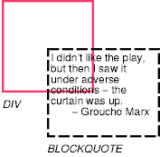
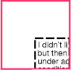
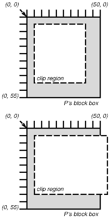

Содержание
Обычно содержимое бокса блока ограничено краями бокса. В определённых случаях бокс может переполняться, то есть его содержимое частично или полностью находится за пределами бокса, например:
Когда возникает переполнение, свойство 'overflow' специфицирует, как сжимается бокс ( и сжимается ли). Свойство 'clip' специфицирует размер и форму сжимаемой области. Спецификация маленькой области для сжатия может вызвать сжатие другого видимого содержимого.
| Значение: | visible | hidden | scroll | auto | inherit |
| Начальное: | visible |
| Применяется: | к элементам уровня блока и к замещаемым элементам |
| Наследуется: | нет |
| Процентное: | N/A |
| Носитель: | визуальный |
Это свойство специфицирует, сжимается ли
содержимое элемента уровня блока, если оно
переполняет бокс элемента (который
действует как содержащий блок для
содержимого).
Значения имеют следующий смысл:
Даже если 'overflow' установлено в 'visible', содержимое может быть обрезано до размеров окна документа ПА средой окружения.
Рассмотрим следующий пример блока кавычек (BLOCKQUOTE), который слишком велик для своего содержащего блока (установленного DIV). Вот документ-источник:
<DIV> <BLOCKQUOTE> <P>I didn't like the play, but then I saw it under adverse conditions - the curtain was up. <DIV class="attributed-to">- Groucho Marx</DIV> </BLOCKQUOTE> </DIV>
Это таблица стилей, управляющая размерами и стилем генерируемых боксов:
DIV { width : 100px; height: 100px;
border: thin solid red;
}
BLOCKQUOTE { width : 125px; height : 100px;
margin-top: 50px; margin-left: 50px;
border: thin dashed black
}
DIV.attributed-to { text-align : right; }
Начальное значение 'overflow' - 'visible', поэтому BLOCKQUOTE может быть сформатирован без сжатия примерно так:
 [D]
Установка 'overflow' в 'hidden' для элемента DIV, с другой стороны, вызывает усечение BLOCKQUOTE содержащим блоком:
 [D]
Значение 'scroll' сообщит ПАгенту, что поддерживается визуальный механизм прокрутки, чтобы вывести его для обеспечения доступа пользователя к усечённому содержимому.
Сжимаемая область определяет, какая часть выводимого содержимого элемента видна. По умолчанию сжатая область имеет тот же размер и форму, что и бокс(ы) элемента. В то же время сжимаемая область может быть модифицирована свойством 'clip'.
| Значение: | <shape> | auto | inherit |
| Начальное: | auto |
| Применяется: | к элементам уровня блока и к замещаемым элементам |
| Наследуется: | нет |
| Процентное: | N/A |
| Носитель: | визуальный |
Свойство 'clip' применяется к элементам,
имеющим свойство 'overflow' со значением,
отличным от 'visible'.
Значения имеют следующий смысл:
<top>, <right>, <bottom> и <left> могут иметь или значение <length>, или 'auto'. Отрицательные значения разрешены. Значение 'auto' указывает, что данный край сжимаемой области будет тем же, что и край генерируемого бокса элемента (т.е. 'auto' означает то же, что '0'.)
Если координаты округляются до пикселных значений, необходимо следить, чтобы не осталось видимых пикселов, когда <left> + <right> равно ширине элемента (или <top> + <bottom> равно высоте элемента), и наоборот, чтобы не оставалось невидимых пикселов, когда эти значения равны 0.
Предки элемента могут также иметь сжатые области (в тех случаях, когда их свойство 'overflow' - 'visible'); то, что отображается, находится на пересечении различных сжатых областей.
Если сжатая область выходит за пределы окна документа ПА, содержимое может быть сжато до размеров окна среды окружения.
Эти два правила:
P { clip: rect(5px, 10px, 10px, 5px); }
P { clip: rect(5px, -5px, 10px, 5px); }
создадут прямоугольную сжимаемую область, ограниченную пунктирной линией:
 [D]
Примечание. В CSS2 все сжимаемые области прямоугольны. Мы предполагаем в будущем расширение, разрешающее непрямоугольное сжатие.
| Значение: | visible | hidden | collapse | inherit |
| Начальное: | inherit |
| Применяется: | ко всем элементам |
| Наследуется: | нет |
| Процентное: | N/A |
| Носитель: | визуальный |
Свойство 'visibility'
специфицирует, отображаются ли боксы,
генерируемые элементом. Невидимые боксы
всё ещё влияют на структуру (см. свойство 'display' - 'none', чтобы
полностью подавить генерацию бокса).
Значения имеют следующий смысл:
Это свойство может использоваться вместе со скриптами для создания динамических эффектов.
В следующем примере нажатие любой кнопки в форме вызывает функцию скрипта, которая делает соответствующий бокс видимым, а другой скрывается. Поскольку эти боксы имеют одинаковые размеры и позицию, эффект заключается в том, что они сменяют друг друга. (Сценарий написан на гипотетическом языке сценариев. Он может иметь или не иметь какого-либо эффекта в ПА CSS.)
<!DOCTYPE HTML PUBLIC "-//W3C//DTD HTML 4.0//EN">
<HTML>
<HEAD>
<STYLE type="text/css">
<!--
#container1 { position: absolute;
top: 2in; left: 2in; width: 2in }
#container2 { position: absolute;
top: 2in; left: 2in; width: 2in;
visibility: hidden; }
-->
</STYLE>
</HEAD>
<BODY>
<P>Choose a suspect:</P>
<DIV id="container1">
<IMG alt="Al Capone"
width="100" height="100"
src="suspect1.jpg">
<P>Name: Al Capone</P>
<P>Residence: Chicago</P>
</DIV>
<DIV id="container2">
<IMG alt="Lucky Luciano"
width="100" height="100"
src="suspect2.jpg">
<P>Name: Lucky Luciano</P>
<P>Residence: New York</P>
</DIV>
<FORM method="post"
action="http://www.suspect.org/process-bums">
<P>
<INPUT name="Capone" type="button"
value="Capone"
onclick='show("container1");hide("container2")'>
<INPUT name="Luciano" type="button"
value="Luciano"
onclick='show("container2");hide("container1")'>
</FORM>
</BODY>
</HTML>